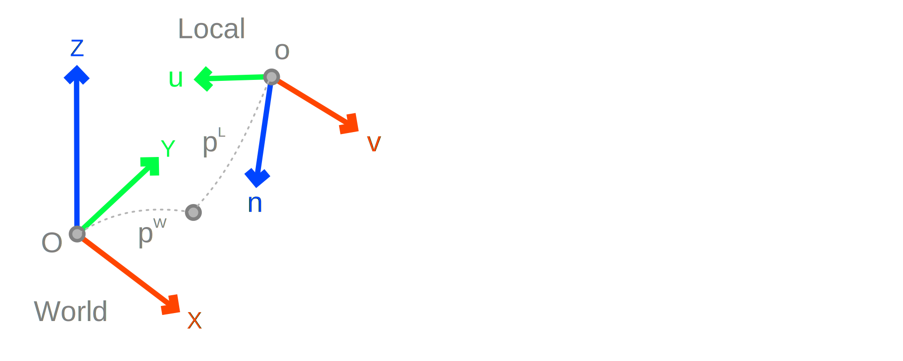
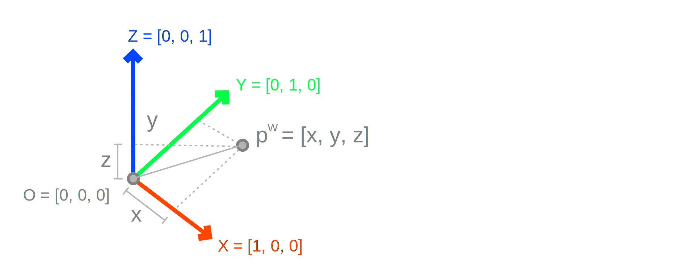
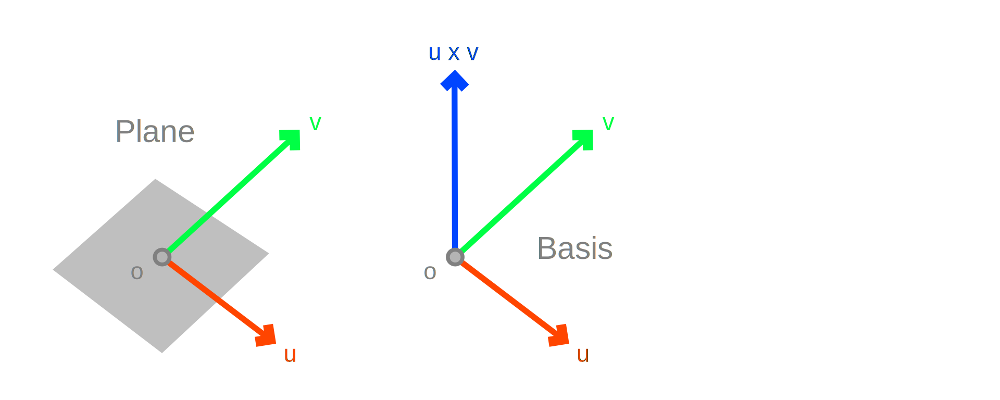
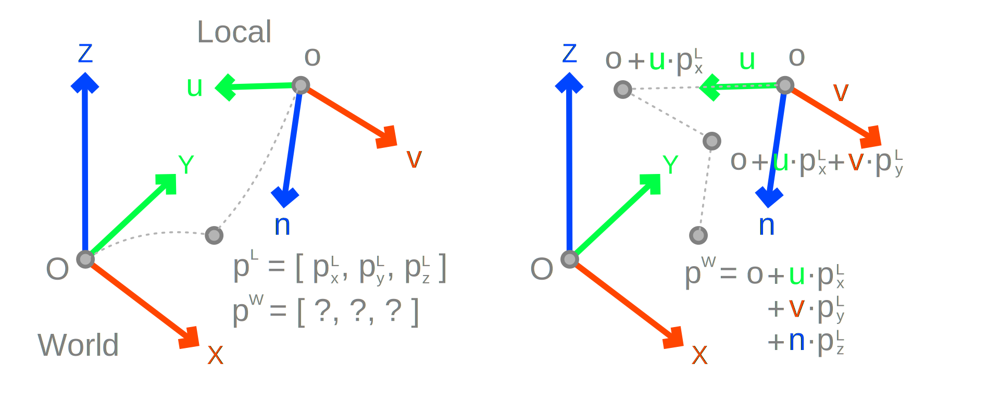
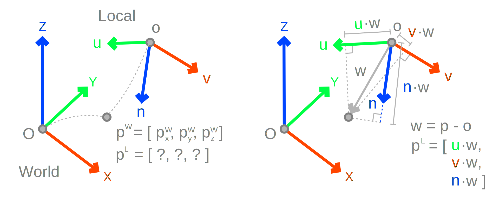

Bases and Planes
Coordinate systems, also known as bases or reference frames, provide a way to look at the same geometry from different perspectives. The reason for doing so is because certain operations are easier to approach from a local versus a global or world perspective. For example, in purely 2D problems it is easier to work in the XY-plane than any arbitrarily oriented plane in 3D. If we solve the problem in the XY-plane then all problems are solved in space up to a transformation from the XY to any other plane.

Definition
Defining a coordinate system requires an origin point O and as many non-parallel basis vectors as the number of dimensions spanned. For two dimensions, two vectors are required X and Y, for three X, Y and Z for three dimensions, etc. Generally, the basis vectors do not need to be unit-length and/or orthogonal with one another. However, when they do have these properties, their linear combinations, that is addition and multiplication of the basis vectors, do not cause directions to contribute onto one another. This simplifies many operations by avoiding the need to solve linear systems of equations.Therefore, it is most convenient to use coordinate systems with orthonormal basis vectors. Thus unless otherwise specified, all coordinate systems may be assumed as orthonormal.
World Coordinates
Points by default, or unless otherwise specified, are always expressed in relationship to an implied World coordinate system defined by the origin point O = [0.0, 0.0, 0.0], and the world axes X = [1.0, 0.0, 0.0], Y = [0.0, 1.0, 0.0], and Z = [0.0, 0.0, 1.0].

""" World Basis
"""
O = Point3d( 0.0, 0.0, 0.0 )
X = Vector3d( 1.0, 0.0, 0.0 )
Y = Vector3d( 0.0, 1.0, 0.0 )
Z = Vector3d( 0.0, 0.0, 1.0 )
This World coordinate system is also known as the global or ambient space coordinate system. Sometimes the notation pw is used for clarifying that a point p is expressed with respect to the World frame.
""" World Basis
"""
O = Point3d.Origin
X = Vector3d.XAxis
Y = Vector3d.YAxis
Z = Vector3d.ZAxis
With this in mind, a point p = [px, py, pz] is just a shorthand notation for p = O + X * px + Y * py + Z * pz because [0.0, 0.0, 0.0] + [px, 0.0, 0.0] + [0.0, py, 0.0] + [0.0, 0.0, pz] = [px, py, pz].
""" Equivalent
"""
p = Point3d( 1.0, 2.0, 3.0 )
p = ( Point3d.Origin +
Vector3d.XAxis * p.X +
Vector3d.YAxis * p.Y +
Vector3d.ZAxis * p.Z )
In other words, the coordinates of a point express the sum of orthogonal motions from the origin by a multiple of its axes. In the same sense, the components of a vector u = p - O represent the combined motion X * ux + Y * uy + Z * uz.
Plane as 3D Basis
A plane P in space defined by its origin o = [ox, oy, oz] and basis vectors u = [ux, uy, uz] and v = [vx, vy, vz], where |u| = |v| = 1 and u · v = 0, is somewhat equivalent to a coordinate system (1). This is because we can easily derive another orthogonal unit vector by using the cross product n = u × v and form the basis { o, u, v, n }.
- In fact we can define two coordinate systems depending on whether we use
n = u × vorn = v × u. Swapping the cross product's order is equivalent to switching the handedness of the coordinate system.

In Rhino the concept of the 3D plane and coordinate system are equivalent. Constructing a Plane object from an origin and two basis 3D vectors is presented below.
""" Constructing a Plane
"""
o = Point3d( 0.0, 0.0, 0.0 )
u = Vector3d( 1.0, 0.0, 0.0 )
v = Vector3d( 0.0, 1.0, 0.0 )
P = Plane( o, u, v )
Once a plane is constructed, its origin and basis vectors can be accessed as seen below. Note that Rhino automatically orthonormalizes the plane's axes. Therefore, Plane( o, u, v ) is different than Plane( o, v, u ).
""" Plane as Basis
"""
o = P.Origin
u = P.XAxis
v = P.YAxis
n = P.ZAxis
Local to World
Suppose a plane is defined by { o, u, v }, where o is its origin and u, and v are its basis vectors. Furthermore, we have a local point p = [px, py] defined with respect to the plane. Its world coordinates can be computed by o + u * px + v * py. This transformation is also known as local-to-global or local-to-world change of reference. (1)
- Notice that this expression works even when the basis vectors are not orthonormal.
""" Local to World
"""
plane = Plane( Point3d( ox, oy, oz ),
Vector3d( ux, uy, uz ),
Vector3d( vx, vy, vz ) )
local = Point2d( px, py )
world = ( plane.Origin +
plane.XAxis * p.X +
plane.YAxis * p.Y )
The way to understand this by considering that the coordinates of a point, in reference to a basis, represent the distances required to move from the origin towards each axis. By extension, this can be used to map between points between coordinate systems.

""" Local to World
"""
plane = Plane( Point3d( ox, oy, oz ),
Vector3d( ux, uy, uz ),
Vector3d( vx, vy, vz ) )
local = Point3d( px, py, pz )
world = ( plane.Origin +
plane.XAxis * p.X +
plane.YAxis * p.Y +
plane.ZAxis * p.Z )
World to Local
Expressing world points in relationship with other frames is slightly more complicated. Recall that the coordinates of a point represent the motion from the origin of a reference coordinate system by multiples of its basis vectors. Therefore, what is needed is to compute the magnitude of those motions, one per axis.
Suppose we have a plane defined by { o, u, v }, where o is its origin and u, and v are its basis vectors. Furthermore, we have a world point p = [px, py, py] for which we wish to find its local coordinates with respect to the plane q = [qx, qy].
First we define the vector w = p - o which encodes the translation from o to p, in the world sense. Then we compute its dot products with the plane's axes u · w and v · w. Note that the dot products capture the projected lengths we need to move about each axis. Which is what we looking for, namely q = [u · w, v · w] (1)
- Note that this expression does NOT works when the basis vectors are not orthonormal. Instead we need to establish and solve a system of linear equations.
""" Local to World
"""
plane = Plane( Point3d( ox, oy, oz ),
Vector3d( ux, uy, uz ),
Vector3d( vx, vy, vz ) )
world = Point3d( px, py, pz )
local = Point2d(
plane.XAxis * ( world - plane.Origin ),
plane.YAxis * ( world - plane.Origin ) )

By extension this can be used for expressing the transformation for changing points between the world and arbitrary coordinate systems.
""" Local to World
"""
plane = Plane( Point3d( ox, oy, oz ),
Vector3d( ux, uy, uz ),
Vector3d( vx, vy, vz ) )
world = Point3d( px, py, pz )
delta = world - plane.Origin
local = Point3d(
plane.XAxis * delta,
plane.YAxis * delta,
plane.ZAxis * delta )
Basis to Basis
A common geometric operation requires copying points from one basis to another. This gets a bit confusing because of the multiplicity of looking at the same object from different frames, but conceptually to perform this operation is the combination of the previous concepts of world-to-local and local-to-world mapping.

Consider a point p expressed in relationship to the
world basis { O, X, Y, Z } and two bases { d, a, b, c } and { o, u, v, n }. The goal is to compute point q which represents the process of copying q from a source frame { d, a, b, c } to a target frame { o, u, v, n }. The requirement is that the transformation is rigid in the sense that both lengths and angles are preserved.
This is performed by first transforming p from world-to-local coordinates p -> p_s. However, localizing the point is equivalent to expressing it as a vector in every coordinate system, including the target basis, thus p_s = p_t. To situate it back in the world p_t -> q with respect to the target frame just requires a local-to-world mapping.
""" World to Source
"""
p = Point3d( px, py, pz )
source = Plane( Point3d( dx, dy, dz ),
Vector3d( ax, ay, az ),
Vector3d( bx, by, bz ) )
delta = p - source.Origin
p_s = Point3d(
source.XAxis * delta.X,
source.YAxis * delta.Y,
source.ZAxis * delta.Z )
""" Source to Target
"""
p_t = p_s
""" Target to World
"""
target = Plane( Point3d( ox, oy, oz ),
Vector3d( ux, uy, uz ),
Vector3d( vx, vy, vz ) )
q = ( target.Origin +
target.XAxis * p_t.X +
target.YAxis * p_t.Y +
target.ZAxis * p_t.Z )
Non-Orthogonal
Mapping a world point p = [px, py, pz] into a non-orthogonal basis ( o, u, v, n ), which origin point o and basis vectors u, v and n, is slightly more complicated. What we are looking for are 3 scaling factors r, s and t, such that p = o + u * r + v * s + n * t. This can be approached by moving the origin to the other side and expanding the equation into coordinates.
[ ux * r + vx * s + nx * t ] [ px - ox ]
[ uy * r + vy * s + ny * t ] = [ py - oy ]
[ uz * r + vz * s + nz * t ] [ pz - oz ]
This yields a system of three equations with three unknowns r, s and t which can be solved using linear algebra. For example with Cramer's rule and determinants.
''' Determinant 3x3
'''
def Det3x3( xx, yx, zx,
xy, yy, zy,
xz, yz, zz ):
return ( xx * ( yy * zz - zy * yz ) -
yx * ( xy * zz - zy * xz ) +
zx * ( xy * yz - yy * xz ) )
def PointToBasis( p, o, u, v, n ):
''' Right Hand Side
'''
d = Vector3d( p.X - o.X,
p.Y - o.Y,
p.Z - o.Z )
''' Left Hand Side Determinant
'''
do = Det3x3( u.X, v.X, n.X,
u.Y, v.Y, n.Y,
u.Z, v.Z, n.Z )
if( do == 0.0 ):
raise Exception( 'Degenerate Basis' )
''' Projections
'''
du = Det3x3( d.X, v.X, n.X,
d.Y, v.Y, n.Y,
d.Z, v.Z, n.Z )
dv = Det3x3( u.X, d.X, n.X,
u.Y, d.Y, n.Y,
u.Z, d.Z, n.Z )
dn = Det3x3( u.X, v.X, d.X,
u.Y, v.Y, d.Y,
u.Z, v.Z, d.Z )
return ( du / do,
dv / do,
dn / do )
''' Demonstration
'''
p = Point3d( 1, 2, 3 )
o = Point3d( 3, 4, 5 )
u = Vector3d( 1, 2, 3 )
v = Vector3d(-3, 4, 1 )
n = Vector3d( 0,-1, 1 )
r, s, t = PointToBasis( p, o, u, v, n )
print( r, s, t )
''' Must be Point3d( 1, 2, 3 )
'''
print( o + u * r + v * s + n * t )
Note that while this process seems convoluted, the determinant can be interpreted as just a dot product between one vector and the cross product of two others. In this sense, it represents the projection of a vector onto a normal of a plane.
Consider the case of a basis where its vectors are orthonormal for instance. The determinant of its basis vectors is do = 1.0, because projecting the one vector onto the direction orthogonal to the other two is just the same unit-length vector.
Moreover, consider mapping a point onto an orthonormal basis using the determinants above. It is easy to see that we are just projecting the p - o vector onto the normals of each plane. That is to compute r, s, and t we project to the normal of the ( v, n ), ( u, n ) and ( u, v ) planes, which are just u, v and n, respectively.